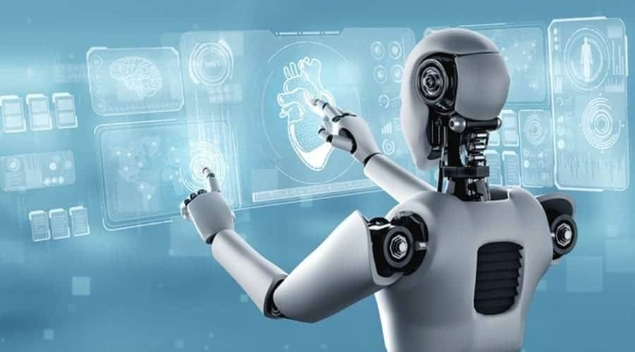

Future of Robotics
Get insights into the future of robotics and its potential to transform industries.
The future of robotics holds immense potential, with several exciting developments on the horizon across various industries. Here are some key trends and advancements:
Robots are machines that can do tasks automatically, and they are getting smarter every day. The future of robotics is full of exciting possibilities that will make life easier, safer, and more efficient. Let’s look at how robots are changing the world and what we can expect in the future.
1. Robots in Everyday Life
In the future, robots will be common in our homes. They will help with cleaning, cooking, and even reminding us to take medicine. Some robots may act as personal assistants, learning our preferences and making life more comfortable.
2. Robots in Healthcare
Robots are already helping doctors perform surgeries with precision. In the future, we will see more advanced robots that can diagnose diseases, deliver medicines in hospitals, and provide care for elderly or disabled people.
3. Self-Driving Cars and Delivery Robots
Autonomous vehicles are a big part of the future. Self-driving cars will make transportation safer and faster, reducing accidents caused by human error. Delivery robots and drones will bring packages right to our doors, making shopping even more convenient.
4. Robots in Factories and Construction
Robots will continue to improve industries by building cars, assembling electronics, and even constructing buildings. They work faster and more precisely than humans, helping businesses save time and money.
5. Agricultural Robots
Farming will become smarter with robots that can plant seeds, water crops, and harvest food. These machines will increase food production while using fewer resources, helping to feed more people.
6. Robots for Dangerous Jobs
In the future, robots will be used for jobs that are too dangerous for humans, like exploring deep oceans, fighting fires, or working in mines. This will keep people safe while getting important work done.
7. Robots with Human-Like Intelligence
Advanced AI will make robots smarter. They will be able to think, learn, and adapt to new situations. This will make robots more helpful in solving complex problems and providing companionship.
Challenges and Concerns
- Job Replacement: Some worry that robots will take over too many human jobs, so finding a balance between technology and employment is important.
- Ethical Issues: We need to ensure that robots follow rules that keep humans safe and respect privacy.
- Cost: Advanced robots are expensive, so making them affordable is a key challenge.
The Future is Full of Possibilities
Robots will continue to evolve and improve, working alongside humans to create a better world. From helping in homes to exploring space, the possibilities are endless. The future of robotics is exciting, and with thoughtful development, it will bring great benefits to society.
In short, robots are here to stay, and they are getting smarter and more useful. By embracing robotics, we can make life easier, safer, and more efficient for everyone.